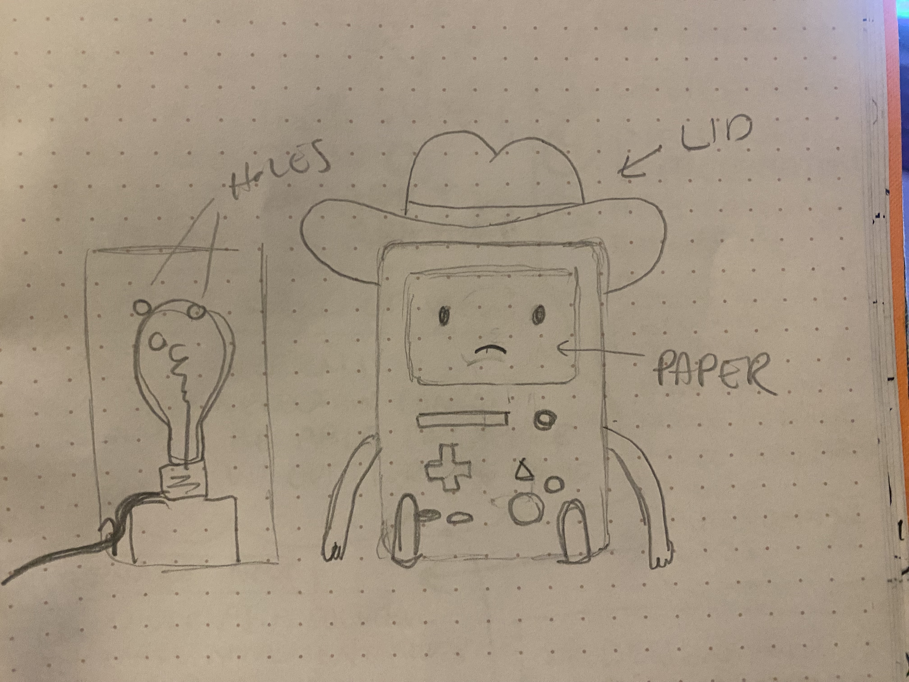
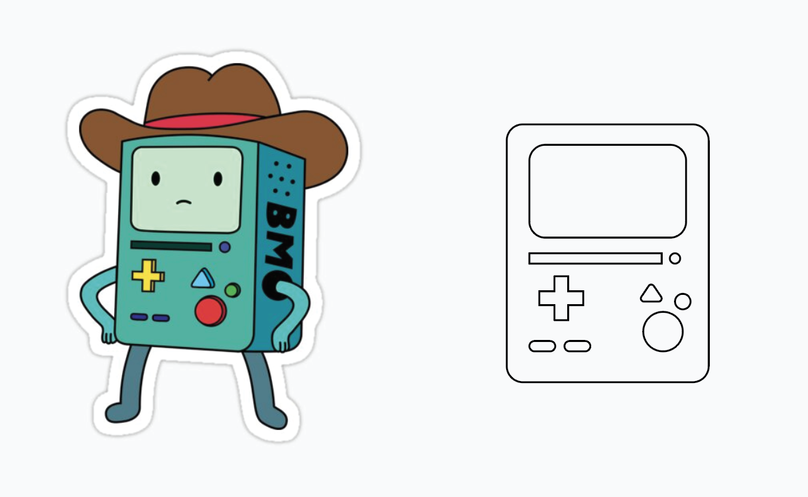
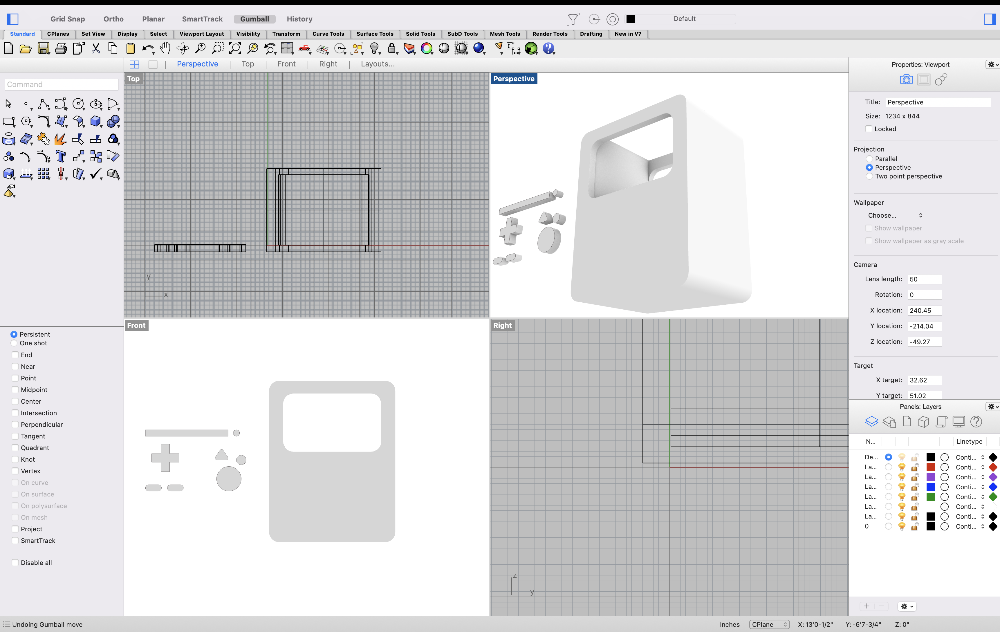
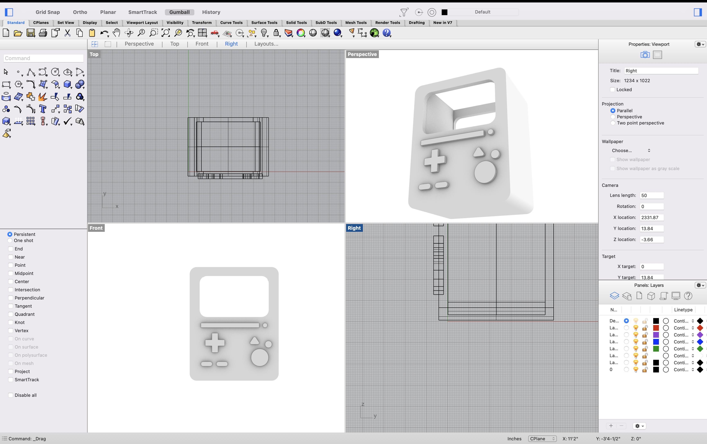
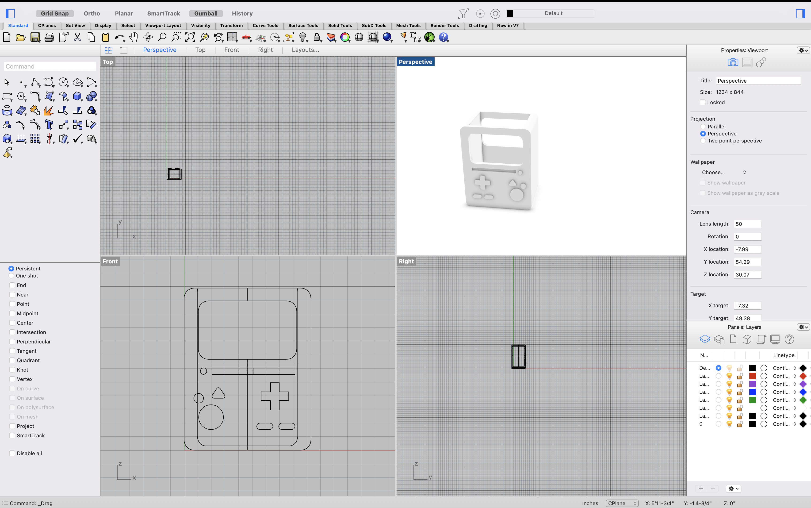
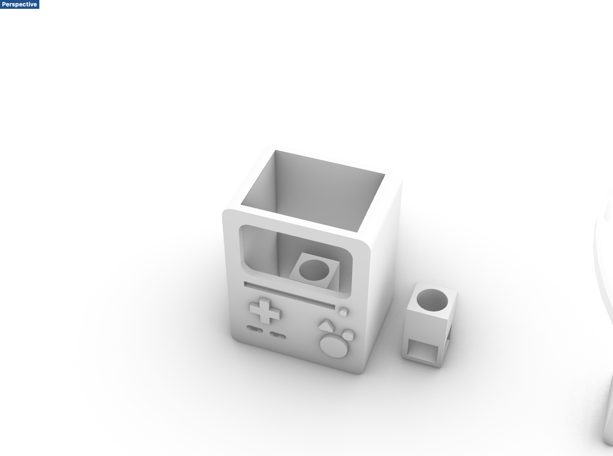

For this project, I wanted to have a bit more fun. I decided to try and make BMO from Adventure Time for my lamp.

First, I grabbed some inspiration from the internet, and then I drew some outlines in Illustrator. I exported those lines as a DXF file and opened them in Rhino. From there, I extruded and built the piece through Boolean Difference and Boolean Union.


It took a few tries and patching some holes, but I was able to make a shape that looks like him!


After that, I did some measurements and made a holder for the lightbulb and cord.

I also pulled a cowboy hat from Thingiverse to act as the "lid", but it keeps breaking into an open mesh when I work with it. I am going to work on printing and fitting everything else before I work on the cowboy hat, but that's where I've gotten so far!
Will be available at completion of project.